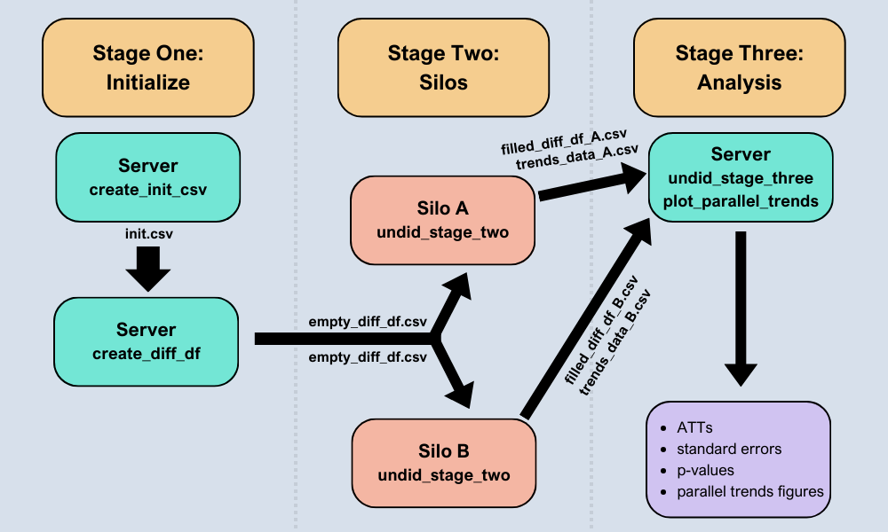

The undidR package provides the framework for implementing difference-in-differences with unpoolable data (UNDID) developed in Karim, Webb, Austin, and Strumpf (2024). UNDID is designed to estimate the average treatment effect on the treated (ATT) in settings where data from different silos cannot be pooled together (potentially for reasons of confidentiality). The package supports both common and staggered adoption scenarios, as well as the optional inclusion of covariates. Additionally, undidR incorporates a randomization inference (RI) procedure, based on MacKinnon and Webb (2020), for calculating p-values for the UNDID ATT.
See the image below for an overview of the undidR framework: 
Installation
You can install the stable release version of undidR from CRAN with:
install.packages("undidR")Examples
For a set of highly detailed examples see the package vignette using:
vignette("undidR", package = "undidR")The following code chunks show some basic examples of using undidR at each of its three stages.
Stage One: create_init_csv() & create_diff_df()
library(undidR)
init <- create_init_csv(silo_names = c("73", "46", "54", "23", "86", "32",
"71", "58", "64", "59", "85", "57"),
start_times = "1989",
end_times = "2000",
treatment_times = c(rep("control", 6),
"1991", "1993", "1996", "1997",
"1997", "1998"))
#> init.csv saved to: C:/Users/Eric Bruce Jamieson/AppData/Local/Temp/RtmpOSra8e/init.csv
init
#> silo_name start_time end_time treatment_time
#> 1 73 1989 2000 control
#> 2 46 1989 2000 control
#> 3 54 1989 2000 control
#> 4 23 1989 2000 control
#> 5 86 1989 2000 control
#> 6 32 1989 2000 control
#> 7 71 1989 2000 1991
#> 8 58 1989 2000 1993
#> 9 64 1989 2000 1996
#> 10 59 1989 2000 1997
#> 11 85 1989 2000 1997
#> 12 57 1989 2000 1998
init_filepath <- normalizePath(file.path(tempdir(), "init.csv"),
winslash = "/", mustWork = FALSE)
empty_diff_df <- create_diff_df(init_filepath, date_format = "yyyy",
freq = "yearly",
covariates = c("asian", "black", "male"))
#> empty_diff_df.csv saved to: C:/Users/Eric Bruce Jamieson/AppData/Local/Temp/RtmpOSra8e/empty_diff_df.csv
head(empty_diff_df, 4)
#> silo_name gvar treat diff_times gt RI start_time end_time
#> 1 73 1991 0 1991;1990 1991;1991 0 1989 2000
#> 2 73 1991 0 1992;1990 1991;1992 0 1989 2000
#> 3 73 1991 0 1993;1990 1991;1993 0 1989 2000
#> 4 73 1991 0 1994;1990 1991;1994 0 1989 2000
#> diff_estimate diff_var diff_estimate_covariates diff_var_covariates
#> 1 NA NA NA NA
#> 2 NA NA NA NA
#> 3 NA NA NA NA
#> 4 NA NA NA NA
#> covariates date_format freq
#> 1 asian;black;male yyyy 1 year
#> 2 asian;black;male yyyy 1 year
#> 3 asian;black;male yyyy 1 year
#> 4 asian;black;male yyyy 1 yearStage Two: undid_stage_two()
silo_data <- silo71
empty_diff_filepath <- system.file("extdata/staggered", "empty_diff_df.csv",
package = "undidR")
stage2 <- undid_stage_two(empty_diff_filepath, silo_name = "71",
silo_df = silo_data, time_column = "year",
outcome_column = "coll", silo_date_format = "yyyy")
#> filled_diff_df_71.csv saved to: C:/Users/Eric Bruce Jamieson/AppData/Local/Temp/RtmpOSra8e/filled_diff_df_71.csv
#> trends_data_71.csv saved to: C:/Users/Eric Bruce Jamieson/AppData/Local/Temp/RtmpOSra8e/trends_data_71.csv
head(stage2$diff_df, 4)
#> silo_name gvar treat diff_times gt RI start_time end_time
#> 1 71 1991 1 1991;1990 1991;1991 0 1989-01-01 2000-01-01
#> 2 71 1991 1 1992;1990 1991;1992 0 1989-01-01 2000-01-01
#> 3 71 1991 1 1993;1990 1991;1993 0 1989-01-01 2000-01-01
#> 4 71 1991 1 1994;1990 1991;1994 0 1989-01-01 2000-01-01
#> diff_estimate diff_var diff_estimate_covariates diff_var_covariates
#> 1 0.12916667 0.009447555 0.116348472 0.009397021
#> 2 0.06916667 0.008602222 0.069515594 0.008272557
#> 3 0.02546296 0.007975422 0.005133291 0.007767637
#> 4 0.02703901 0.008564103 0.029958108 0.008338060
#> covariates date_format freq
#> 1 asian;black;male yyyy 1 year
#> 2 asian;black;male yyyy 1 year
#> 3 asian;black;male yyyy 1 year
#> 4 asian;black;male yyyy 1 year
head(stage2$trends_data, 4)
#> silo_name treatment_time time mean_outcome mean_outcome_residualized
#> 1 71 1991 1989 0.3061224 0.1998800
#> 2 71 1991 1990 0.2708333 0.1502040
#> 3 71 1991 1991 0.4000000 0.1949109
#> 4 71 1991 1992 0.3400000 0.1876636
#> covariates date_format freq
#> 1 asian;black;male yyyy 1 year
#> 2 asian;black;male yyyy 1 year
#> 3 asian;black;male yyyy 1 year
#> 4 asian;black;male yyyy 1 yearStage Three: undid_stage_three()
dir_path <- system.file("extdata/staggered", package = "undidR")
results <- undid_stage_three(dir_path, agg = "silo", covariates = TRUE,
nperm = 501)
#> Completed 100 of 500 permutations
#> Completed 200 of 500 permutations
#> Completed 300 of 500 permutations
#> Completed 400 of 500 permutations
#> Completed 500 of 500 permutations
results
#> silo_name silo_ATT silo_SE silo_p_val silo_jknife_SE silo_jknife_p_val
#> 1 57 -0.08144843 0.06215099 0.205650586 0.08649845 0.358207857
#> 2 58 0.05280529 0.02538483 0.042267963 0.02689507 0.054760168
#> 3 59 0.12365658 0.03562132 0.001823809 0.04254611 0.007377655
#> 4 64 0.07263498 0.03311326 0.035420278 0.03786681 0.063776333
#> 5 71 0.04618515 0.02595757 0.079666710 0.02796956 0.103295735
#> 6 85 0.07400401 0.03456541 0.041820821 0.04102590 0.082856564
#> agg_ATT agg_ATT_SE agg_ATT_p_val agg_ATT_jknife_SE agg_ATT_jknife_p_val
#> 1 0.04797293 0.02570683 0.1210099 0.02816042 0.1636711
#> 2 NA NA NA NA NA
#> 3 NA NA NA NA NA
#> 4 NA NA NA NA NA
#> 5 NA NA NA NA NA
#> 6 NA NA NA NA NA
#> agg_ATT_RI_p_val
#> 1 0.18
#> 2 NA
#> 3 NA
#> 4 NA
#> 5 NA
#> 6 NA